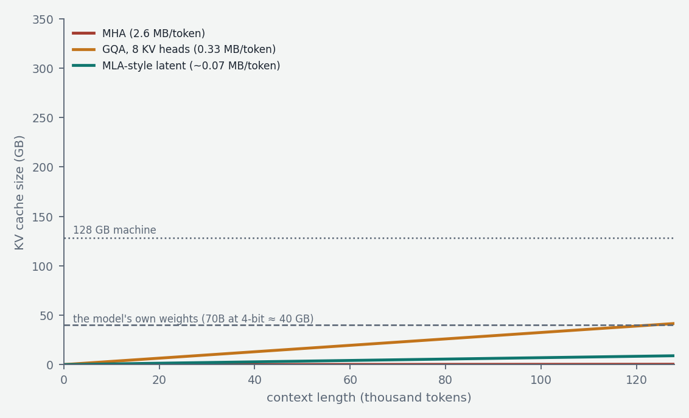
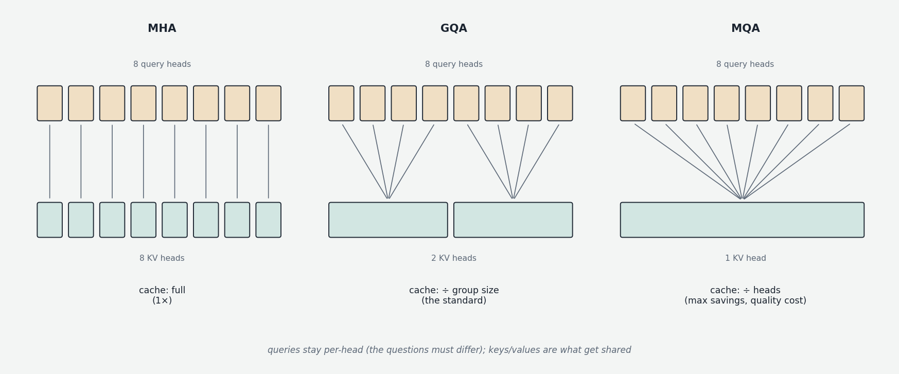

This closing chapter of the forward-pass part revisits attention with one question: at inference time, what must actually be stored? The answer — the KV cache — is the single most important object in inference economics, referenced constantly in Chapters 4 through 7, and the architectural variants that manage it (the MQA/GQA/MLA family) are now a standard line on every model card.
Why the cache exists
Training processes a whole sequence in one parallel pass; nothing special is stored. Generation (Chapter 00f) is different: each new token's attention must compare against the keys, and weighted-sum the values, of every previous position. Recomputing those keys and values at every step would be absurd — they are determined by the earlier tokens, which haven't changed. So they are computed once and kept: the KV cache. Each generation step computes K and V only for the newest token and appends them.

This makes generation cheap per step but creates a memory object that grows linearly with context, forever, for every concurrent session. The size per token: for each of L layers and H heads, a key and a value vector of head dimension d_h, at 2 bytes per number — 2 × L × H × d_h × 2 bytes. For a 70B-class fully multi-headed model (L = 80, H = 64, d_h = 128) that is ~2.6 MB per token: a 32,000-token context costs ~80 GB of cache — comparable to the weights themselves, and growing past them at longer contexts. Unlike weights, the cache scales with context and with concurrent users. This is the problem the variants below are competing solutions to.
MHA: the baseline
Classic multi-head attention (MHA), as built in Chapter 00b, gives every head its own private query, key, and value projections. Maximally flexible — each head asks its own questions against its own advertisements and payloads — and maximally expensive: the cache stores a full K and V per head per layer per token. The numbers above assume MHA.
The asymmetry, and MQA
The insight enabling everything else (Shazeer, 2019): heads need distinct queries — head-specific questions are the whole point of multi-head attention — but they don't equally need distinct keys and values. Every head is looking at the same tokens; in principle they could share one set of descriptions and payloads while asking different questions of them.

Multi-Query Attention (MQA) takes this to the limit: all H query heads, but exactly one shared key head and one value head. The cache shrinks by a factor of H — 64× in our example, 80 GB down to ~1.3 GB at 32K context. The cost is expressiveness: every query competes against the same single key/value set, squeezing the specialization of Chapter 00b's heads (syntax, coreference, induction — each plausibly wanting different keys and values) through one bottleneck. MQA models measurably underperform matched MHA models; PaLM used it, but the field moved to the compromise.
GQA: the production standard
Grouped-Query Attention (GQA, Ainslie et al. 2023) shares K/V heads across groups of query heads: 64 query heads in 8 groups of 8 means 8 K and 8 V heads — an 8× cache reduction (80 GB → ~10 GB) with most of MHA's expressiveness intact, since each group keeps dedicated keys and values. GQA is the default of the modern open-weight era: Llama 3 uses 8 KV heads at every scale (32 query heads at 8B, 64 at 70B, 128 at 405B — group sizes 4, 8, 16); Mistral, Qwen, and others likewise. Smaller groups buy quality at cache cost; 8 KV heads became the conventional sweet spot for 7B–70B models.
Note what these variants do not change: the attention math — scaled dot products, softmax, weighted values — is identical; only the number of independent K/V projections, and therefore the cache footprint and a slice of parameter count, differs. Training is unchanged.
Beyond sharing: MLA, sliding windows, and FlashAttention
Three further techniques attack the same pressures from different angles, completing the standard toolkit.
Multi-Latent Attention (MLA, introduced by DeepSeek in 2024 and a key reason their very large models serve cheaply) compresses rather than shares: keys and values are projected down into a small shared latent vector per token — the only thing cached — and decompressed on the fly when attention needs them. The cache shrinks below even aggressive GQA while preserving more expressiveness, at the cost of extra computation and engineering; it is the current direction of travel for cache efficiency, and the spiritual ancestor of the learned sparse attention in the same lab's later models (Chapter 10).
Sliding-window attention (Mistral popularized it) limits the reach instead of the per-token size: attend only to the most recent W tokens (e.g. 4,096) and discard older K/V entirely — constant memory regardless of context, at the price of no direct long-range attention, so it is used in hybrid form, with some full-attention layers retained for global reach. This local/global layer-mixing pattern is the direct precursor of Chapter 10's linear-attention hybrids, which replace the windowed layers with constant-cost recurrent ones.
FlashAttention (Dao et al., 2022) is different in kind: not an architectural variant but an exact algorithm for computing standard attention without ever materializing the full N×N score matrix in slow GPU memory — processing it in tiles inside fast on-chip memory. Same model, bit-for-bit-equivalent outputs, dramatically faster and more memory-efficient at long sequences; it composes with MHA, GQA, or MLA and is simply how attention is computed in every serious system now.
The picture to keep
Generation stores every past token's keys and values — the KV cache — and that cache, not the weights, is what grows with context and concurrency, making it the binding constraint of long-context inference. The variant family is a dial on one asymmetry: queries must stay per-head, keys and values can be shared — fully (MQA, maximal savings, real quality cost), in groups (GQA, the production standard), or compressed into latents (MLA, the frontier). Sliding windows bound the cache by forgetting; FlashAttention computes whatever variant you chose without waste. On a fixed memory budget, these choices are the difference between a model that fits with room for context and one that doesn't fit at all — which is exactly where Part III of this course (Chapters 5–7) picks up the story.